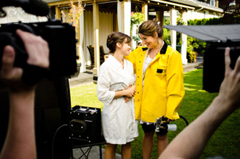
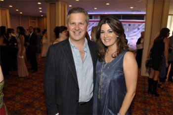

Biography
You know you've made it in Canada when The Royal Canadian Air Farce decides to spoof something you've done. Nicole had that distinct pleasure following the airing, over two consecutive Christmas seasons, of ROGERS AMIGO sentimental commercial campaign in the early 1990s. That ad marked the beginning of a career in the Entertainment Industry that has spanned over two decades and shows no signs of slowing down any time soon. Not only is Nicole a successful actor, producer, and director, she is also a mother, a wife, and role model of our time.
This versatile and dynamic actress has been able to work both "sides" of her native Canada with much success and recognition. Nicole's credits in film and television include numerous leads in various MOWs, television shows, and feature films in both Canada and the United States (see IMDB.com for a more detailed list of credits).
The multifaceted Nicole is also in high demand in the animation, corporate communications, advertising, and video game markets. She has provided her voice-over expertise to over 100 companies including AMERICAN EXPRESS, WIRELESS WAVE, CLUB HOUSE, and MCDONALDS, and she has voiced innumerable animation programs including LITTLEST PET SHOP, MY LITTLE PONY, TOM AND JERRY, STRAWBERRY SHORTCAKE and the BARBIE™ franchise. Favourite video games portrayals to date have included: WORLD OF WARCRAFT; STARGATE UNLEASHED; and MY LITTLE PONY. Nicole is also the narrator for the feature film HEART OF A DRAGON, Executive Produced by Mark Gordon and David Foster, and based on Rick Hansen's "Wheels in Motion" tour.
As a Director, Producer, and Host, Nicole worked on the hit Slice Network series CRASH TEST MOMMY for four seasons, helping 52 well-deserved mothers get a break and a heap of praise from their families for all the work moms do to keep a household running smoothly. Other Directing/Producing credits include THE CENTRE (pilot- Producer/Director), 12 episodes of the animated series MIRA AND MARIE (Director), and the feature film NOROC (Co-Producer).
As co-founder of Predator Communications, Nicole has conceived, produced, and directed content for such clients as the City of Vancouver, the City of Ottawa, and Vancouver Fire and Rescue Services. For more information on Predator Communications, please visit: www.predcomm.com
Nicole attended York University and graduated with a Bachelor of Fine Arts degree with Honours. She continued her studies in London and Oxford at the prestigious British American Dramatic Academy, an institution that is affiliated with Yale University. Nicole had a dream team of instructors, including Jeremy Irons. Nicole has furthered her education with a Masters of Arts in Communication from Royal Roads University (2011). She is the recipient of both the Founders Award for leadership and sustainability and the Chancellors Award for highest academic achievement.

Nicole has also received recognition for her work outside of the classroom. In 2014, UBCP honoured Nicole as their Woman of the Year in recognition of her outstanding contribution to the Union, the industry, and causes of social justice. She has been nominated by her peers for several Leo Awards for her work on both the small and big screen (Best Lifestyle Host- CRASH TEST MOMMY, 2008 and 2009; Best Supporting Actress in a Feature Film- THE FOURSOME, 2007), and she has received several nominations (Behind the Voice Actors Awards, 2012, 2015) for her vocal perfomances in LITTLEST PET SHOP and THE ADVENTURES OF PACMAN. Recently, Nicole won Best Voice at the UBCP/ACTRA AWARDS for her animation work.
Her mother introduced Nicole to her husband at a screening at the Toronto Film Festival in the late 1990s. It took some time before they met up again at his workplace in Vancouver; however, after commuting between Toronto, Los Angeles and Vancouver for her career, she knew that Chris Ainscough, an award-winning composer in the film/tv industry, was her future. Nicole believes that diversification is the key to success, and that with success in life there can be balance. She resides in Vancouver with her husband and their two sons.